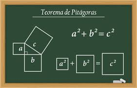
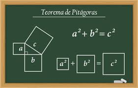

CONCEITOS BÁSICOS
Os triângulos são polígonos de três lados e três ângulos. Existem três tipos principais baseados nos lados: equilátero (todos os lados iguais), isósceles (dois lados iguais) e escaleno (todos os lados diferentes). Quanto aos ângulos, a soma dos ângulos internos de um triângulo sempre é 180 graus, e cada ângulo externo é igual à soma dos ângulos não adjacentes internos. Outras características incluem altura (perpendicular de um vértice ao lado oposto), mediana (liga um vértice ao ponto médio do lado oposto), bissetriz (divide um ângulo em dois iguais) e pontos especiais como circuncentro, incentro, ortocentro e baricentro.TIPOS DE TRIÂNGULOS
Um triângulo é chamado de equilátero se todos os lados possuem a mesma medida. Um triângulo é chamado de isósceles se dois lados possuem a mesma medida. Um triângulo é chamado de escaleno se todos os lados possuem medidas diferentes. Um triângulo é chamado de acutângulo se todos os ângulos são agudos.TEOREMAS IMPORTANTES
O Teorema de Pitágoras: A base da geometria Em um triângulo retângulo, a hipotenusa, o lado oposto ao ângulo reto, guarda um segredo fascinante: seu quadrado é igual à soma dos quadrados dos outros dois lados, os catetos. Essa é a essência do Teorema de Pitágoras, um pilar fundamental da geometria desde o século VI a.C. O Teorema Fundamental da Aritmética: Desvendando os números primos Os números primos, aqueles indivisíveis por nenhum outro número além de si mesmos e 1, são os blocos de construção de todos os números inteiros. O Teorema Fundamental da Aritmética revela a beleza dessa estrutura: todo número inteiro positivo pode ser expresso como um produto único de números primos. O Teorema de Euler: Uma sinfonia matemática A elegância da matemática se manifesta de diversas formas. Um exemplo notável é o Teorema de Euler, que conecta três números inteiros positivos (a, b e c) de uma maneira surpreendente: a^φ(b) ≡ 1 (mod c), onde φ(b) representa a função phi de Euler, que conta os números inteiros positivos menores que b e coprimos com ele. Essa relação harmoniosa entre os números tem diversas aplicações em criptografia e teoria dos números. O Último Teorema de Fermat: Um desafio secular Por mais de 350 anos, o Último Teorema de Fermat desafiou os matemáticos. Proposto por Pierre de Fermat em 1637, o teorema afirma que não há inteiros positivos a, b e c que satisfaçam a equação a^n + b^n = c^n, para qualquer valor inteiro n maior que 2. Somente em 1994, Andrew Wiles provou o teorema, utilizando técnicas matemáticas complexas e inovadoras. O Teorema Fundamental do Cálculo: Desvendando as infinitas possibilidades O cálculo, com suas derivadas e integrais, é uma ferramenta poderosa para analisar a mudança e o movimento. O Teorema Fundamental do Cálculo estabelece uma ponte crucial entre essas duas operações: a derivada de uma integral definida é igual à função original integrando. Essa profunda conexão permite resolver problemas complexos em física, engenharia e outras áreas.

 

GEOMETRIA ANÁLITICA
A geometria analítica é um ramo da matemática que combina a geometria euclidiana com a álgebra para estudar figuras geométricas e suas propriedades. Ela nos permite representar pontos, retas, curvas e outras formas geométricas usando coordenadas numéricas, abrindo um universo de possibilidades para analisar e resolver problemas geométricos com ferramentas algébricas. No coração da geometria analítica está o sistema cartesiano, também conhecido como plano cartesiano. Esse sistema consiste em dois eixos perpendiculares, o eixo X (horizontal) e o eixo Y (vertical), que se cruzam em um ponto chamado origem (0,0). Cada ponto no plano é representado por um par ordenado de coordenadas (x, y), onde x indica a distância horizontal do ponto à origem e y indica a distância vertical. Na geometria analítica, as figuras geométricas são representadas por equações algébricas. Por exemplo, a equação y = mx + b representa uma reta no plano cartesiano, onde m é a inclinação da reta e b é o intercepto com o eixo Y. Através de equações, podemos determinar propriedades de figuras como sua inclinação, posição, interseções e muito mais. A geometria analítica também nos fornece ferramentas para calcular distâncias entre pontos, ângulos entre retas e áreas de figuras geométricas. Usando fórmulas matemáticas e as propriedades das figuras, podemos determinar essas medidas com precisão e sem a necessidade de instrumentos de desenho tradicionais.APLICAÇÕES AVANCADAS
Triângulos:
Reis da Trigonometria e da Geometria Espacial com Aplicações no Mundo
Real Os triângulos, figuras geométricas compostas por três lados e três ângulos,
são pilares fundamentais na matemática, com presença marcante tanto na
trigonometria quanto na geometria espacial, além de diversas aplicações práticas
que impactam nosso dia a dia.
Triângulos na Trigonometria:
Desvendando as Relações entre Ângulos e Lados A
trigonometria é o ramo da matemática que estuda as relações entre os lados e
ângulos dos triângulos, especialmente os triângulos retângulos. Através de
funções trigonométricas como seno, cosseno e tangente, podemos calcular medidas
desconhecidas de um triângulo, mesmo que conhecendo apenas algumas informações.
Funções Trigonométricas e seus Feitiços Matemáticos:
Seno (sen): Representa a
razão entre o cateto oposto e a hipotenusa em um triângulo retângulo. Cosseno
(cos): Representa a razão entre o cateto adjacente e a hipotenusa em um triângulo
retângulo. Tangente (tan): Representa a razão entre o cateto oposto e o cateto
adjacente em um triângulo retângulo.
Aplicações Práticas:
Navegação:
Na navegação marítima e aérea, os triângulos e as funções
trigonométricas são utilizados para calcular distâncias, direções e ângulos,
permitindo que os navegadores traçam rotas precisas. Engenharia:
Na engenharia
civil e estrutural, os triângulos são usados para calcular o peso e a força que
uma estrutura pode suportar, garantindo a segurança de edifícios, pontes e
outras construções. Astronomia:
Na astronomia, os triângulos e as funções
trigonométricas são utilizados para determinar a posição das estrelas, planetas
e outros objetos celestes, permitindo que os astrônomos mapeiem o universo.
Triângulos na Geometria Espacial:
Explorando o Mundo 3D Na geometria espacial,
os triângulos se expandem para três dimensões, formando prismas, pirâmides e
outras figuras complexas. Através do estudo das propriedades dos triângulos
nestes sólidos, podemos calcular áreas, volumes e ângulos diédros com precisão.
Tipos de Triângulos Espaciais:
Triângulos Retângulos:
Presentes em prismas
retos e pirâmides retas, são essenciais para o cálculo de áreas de bases e
volumes desses sólidos. Triângulos Isósceles:
Encontrados em prismas oblíquos
e pirâmides oblíquas, facilitam o cálculo de áreas de faces e ângulos diédros.
Triângulos Equiláteros:
Presentes em tetraedros, são fundamentais para determinar
medidas de ângulos e volumes regulares.
Aplicações Práticas: Arquitetura:
Na arquitetura, os triângulos são utilizados
para projetar telhados, vigas e outras estruturas, garantindo a estabilidade e
a estética das construções. Design: No design de produtos e embalagens, os
triângulos são usados para criar formas otimizadas e eficientes, utilizando menos
material e otimizando o espaço. Topografia:
Na topografia, os triângulos e a
trigonometria são utilizados para mapear terrenos, calcular altitudes e determinar
distâncias entre pontos, permitindo a criação de mapas precisos.